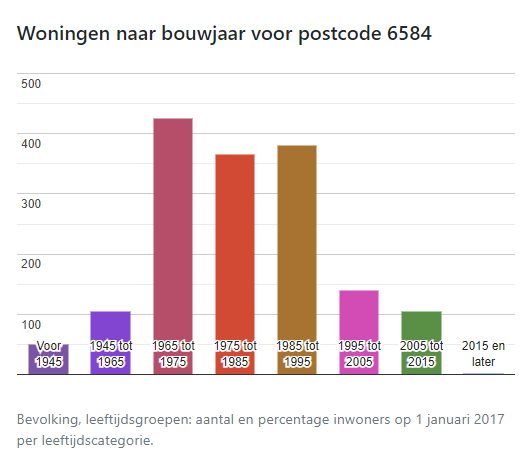
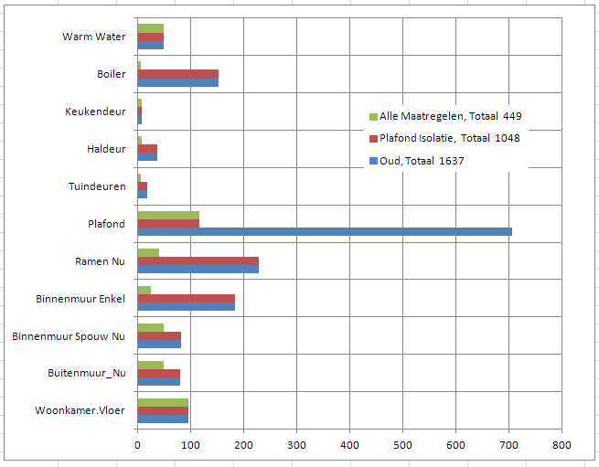
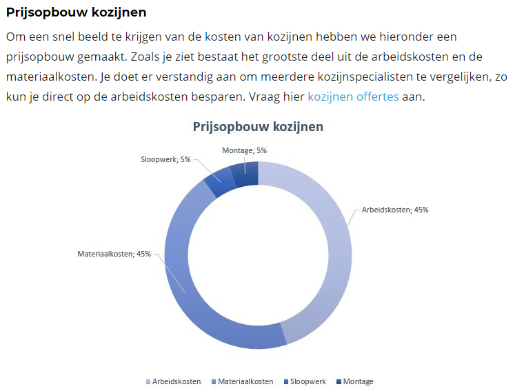
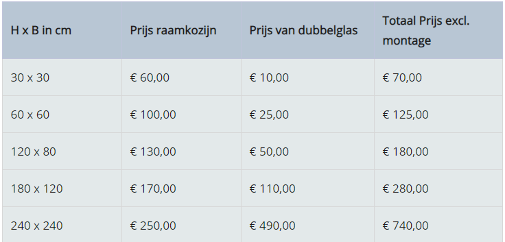

Kozijnen
4 March, 2019
11:52
Algemeen
Kozijnen
Algemeen met veel video's : https://www.verbouwkosten.com/kozijnen/vervangen/
MilieuCentraal: https://www.milieucentraal.nl/in-en-om-het-huis/verbouwen/kozijnen-vervangen/
Eigenhuis : https://www.eigenhuis.nl/eigen-huis-kopen/huis-duurzaam-maken/energiehuis/kozijnen-vervangen
Glas
Eigenhuis Glas: https://www.eigenhuis.nl/eigen-huis-kopen/huis-duurzaam-maken/energiehuis/dubbel-glas
MilieuCentraal: https://www.milieucentraal.nl/energie-besparen/energiezuinig-huis/isoleren-en-besparen/dubbel-glas-hr-glas-en-triple-glas/
https://www.verbouwkosten.com/dubbel-glas/
https://www.dubbelglaskennis.nl/dubbel-glas-prijzen/
Het vervangen van dubbel glas door hr-glas heeft alleen zin als het bestaande glas lek is.
Pasted from <https://www.eigenhuis.nl/eigen-huis-kopen/huis-duurzaam-maken/energiehuis/dubbel-glas>
https://allecijfers.nl/postcode/6584/#bouwjaar-woningen

Screen clipping taken: 06-Mar-19, 11:32
Vacuümglas
Alternatief voor normaal dubbel glas is vacuümglas. Dit is dubbel glas met een hele smalle tussenruimte die vacuüm is gezogen. Door dit vacuüm zorgt het glas voor een hoge isolatiewaarde, terwijl het veel dunner is dan normale dubbel glas. Het is wel duurder.
Pasted from <https://www.eigenhuis.nl/eigen-huis-kopen/huis-duurzaam-maken/energiehuis/dubbel-glas>
Keurmerken
VKG (keurmerk kunststof kozijnen): https://vkgkeurmerk.nl/
KVT (keurmerk houten kozijnen)
Gevelbranche: https://www.vmrg.nl/
Politiekeurmerk: https://www.politiekeurmerk.nl/over-het-politiekeurmerk/
Besparing
Onderwerp | U-waarde | Verlies |
Merantie 12 cm | 1.1 |
|
Kunstof | 1.3 |
|
Enkel |
|
|
Thermopane | 2.5 … 3 |
|
HR++ | 0.9 ... 1.2 |
|
HR+++ | 0.5 … 1 |
|
| |||
Prijs-kwaliteitverhouding | +++ | + | ++ |
Isolatie | ++ | +++ | ++ |
Onderhoud | ++ | + | +++ |
Veiligheid (inbraakwerend) | ++ | +++ | +++ |
Stijl en kleur (de kozijn soort beschikt over een veelzijdig design) | + | ++ | +++ |
Milieuvriendelijk | ++ | +++ | ++ |
Levensduur | +++ ongeveer 50 jaar | ++ -Hardhouten kozijnen: 40 - 75 jaar -Zachthouten kozijnen 15 - 25 jaar | +++ ongeveer 40 jaar |
Hieronder vind je per materiaalsoort meer uitleg over de voor- en nadelen.
Pasted from <https://www.homedeal.nl/kozijnen/>
R-waarde | U-waarde | Oppervlak | T-Binnen | T-Buiten | Kosten-m2 | Kosten | Jaar-m3 | -8 | -6 | -4 | -2 | 0 | 2 | 4 | 6 | 8 | 10 |
|
HR glas | 0.35 | 2.8 | 12.25 | 20 | 0 | 14.91 | 182 | 228 | 960 | 891 | 823 | 754 | 686 | 617 | 548 | 480 | 411 | 343 |
HR++ glas | 0.9 | 1.1 | 12.25 | 20 | 0 | 5.85 | 71 | 89 | 377 | 350 | 323 | 296 | 269 | 242 | 215 | 188 | 161 | 134 |
HR+++ glas | 2 | 0.5 | 12.25 | 20 | 0 | 2.66 | 32 | 40 | 171 | 159 | 147 | 134 | 122 | 110 | 98 | 85 | 73 | 61 |
Kozijn Merbau | 0.83 | 1.19 | 2.77 | 20 | 0 | 6.36 | 17 | 22 | 92 | 86 | 79 | 72 | 66 | 59 | 53 | 46 | 39 | 33 |
Kozijn Dark Red Meranti | 0.92 | 1.08 | 2.77 | 20 | 0 | 5.78 | 16 | 20 | 84 | 78 | 72 | 66 | 60 | 54 | 48 | 42 | 36 | 30 |
Kozijn Grenen | 1.09 | 0.91 | 2.77 | 20 | 0 | 4.87 | 13 | 16 | 71 | 65 | 60 | 55 | 50 | 45 | 40 | 35 | 30 | 25 |
Kozijn Vuren | 1.26 | 0.79 | 2.77 | 20 | 0 | 4.22 | 11 | 14 | 61 | 57 | 52 | 48 | 43 | 39 | 35 | 30 | 26 | 21 |
Totaal | R-waarde | U-waarde | Oppervlak | T-Binnen | T-Buiten | Kosten-m2 | 342 | 429 | 1816 | 1686 | 1556 | 1425 | 1296 | 1166 | 1037 | 906 | 776 | 647 |
Pasted from <http://localhost:8888/lab>
Passiefhuis kozijnen
Deze kozijnen voldoen aan de hoogste eisen voor isolatie en kierdichting tussen de delen en is meestal voorzien van driedubbele hoog rendement glas. Het toepassen van dergelijke kozijnen heeft alleen zin als het hele huis op het passiefhuis niveau verbouwd gaat worden.
Pasted from <https://www.eigenhuis.nl/eigen-huis-kopen/huis-duurzaam-maken/energiehuis/kozijnen-vervangen>
"Het vervangen van kozijnen is een flinke investering. In vergelijking met andere isolerende maatregelen is de terugverdientijd aanzienlijk langer. Het vervangen van kozijnen zorgt over het algemeen wel voor een beter comfort en een betere woningwaarde." Gijs - Bouwkundig Adviseur Duurzaam Bouwloket
Pasted from <https://www.duurzaambouwloket.nl/maatregel/vervangen-kozijnen>
Subsidie / Lening
Gemeente Jos ….
Vergunning
Bij het veranderen van de kozijn of gevel is vooral de plaats van belang. In de regel geldt dat alles wat grenst aan de openbare ruimte (weg of groen), zoals de voorkant (en bij hoekwoningen de zijkant van de woning), een grotere invloed heeft op de directe omgeving dan bouwwerken die aan de achterkant worden gebouwd. Daarom mogen kozijn- en gevelwijzigingen aan de voor- en zijkant van de woning alleen vergunningsvrij worden geplaatst op het moment dat het gaat om het vervangen van het bestaande kozijn (onderhoud).
Pasted from <https://www.duurzaambouwloket.nl/maatregel/vervangen-kozijnen>
Voor en Nadelen
1.Minder stookkosten
Doordat minder warmte ontsnapt, hoef je minder te stoken en verbruik je minder gas. Afhankelijk van het soort dubbelglas verdien je deze investering meestal binnen 5 tot 7 jaar terug. De besparing HR++ glas is per m2 glas zo’n 24 m3 gas op je stookkosten. Dat komt neer op € 12 per m2 glas ten opzichte van enkel glas.
2. Meer wooncomfort
Dankzij dubbel glas woon je behaaglijker. Er stroomt minder minder koude lucht via de ramen binnen. Bovendien voorkomt dubbel glas de vorming van condens aan de binnenkant. Ook is dubbel glas inbraakwerend.
3. Beter voor het milieu
Verklein CO2-uitstoot dankzij het behoud van warmte en bespaar op de stookkosten. Brandwerend glas draagt niet bij aan het blussen van de brand, maar zorgt er voornamelijk voor dat de brand zich lastiger kan uitbreiden.
4. De waarde van je huis stijgt
Je huis stijgt in waarde door het betere energielabel dat dubbel glas met zich meebrengt.
5. Fiscaal aantrekkelijk
Dubbel glas in je huis aanbrengen is een rendabele investering. Op den duur verdient het zichzelf namelijk terug. Wist je dat de overheid in 2017 bekend heeft gemaakt energiezuinig wonen meer te stimuleren? Neem eens een kijkje op de site van de Rijksoverheid en bekijk hoeveel jij kunt besparen.
Pasted from <https://www.homedeal.nl/kozijnen/>
Eigen Situatie

Kosten Opbouw

| 
|
De kostprijs voor kozijnen vervangen verschillen per materiaal dat u kiest:
Soort kozijn | Oppervlakte | Prijs |
Kunststof kozijnen | 10 m2 | €650 – €700 |
Houten kozijnen | 10 m2 | €700 – €850 |
Aluminium kozijnen | 10 m2 | €750 – €900 |
In het laten vervangen van kozijnen zit dus no
Pasted from <https://www.aannemer-gigant.nl/huis-verbouwen/kozijnen-vervangen/>
Firma's
Kozijnen
https://www.benitech.nl/kozijnen-vervangen/
https://www.profel.nl/kozijnen/
https://www.profel.nl/kozijnen/kunststof-kozijnen/
https://www.homedeal.nl/kozijnen/
https://www.ploegkozijnen.nl/kunststof-kozijnen/plaatsen-vervangen
https://alku.nl/kunststof-kozijnen/kozijnen-vervangen
https://www.kozijnenbesteller.nl/aanbod/raamkozijn-vervangen.php
Glas
https://www.glas.nl/dubbel-glas
https://www.achterbergschilders.nl/diensten/glas-vervangen/
https://glasbedrijfdejonge.nl/glas-vervangen
http://www.thijssenbv.com/glaszetter/vragen-glas/hr-glas
Doe het zelf
Kozijnen
https://www.toeleveringonline.nl/inspiratie/stappenplan-kozijnen-vervangen/
https://kozijnenbestellen.com/hr-glas/
https://www.meneerkozijn.nl/producten/kozijnen-vervangen/
https://www.toeleveringonline.nl/
https://www.mijnkluswijzer.nl/zelf-kozijnen-vervangen/
https://houtenkozijnoutlet.nl/
https://infobron.nl/Kozijnen-vervangen-in-8-stappen
https://www.doehetzelfzuiderveld.nl/kozijnen-plaatsen/
https://houtenkozijnonline.nl/
https://www.verbouw-gigant.nl/kozijnen-plaatsen/
Glas
https://www.youtube.com/watch?v=3Lir0zqggsE
https://www.glaskoning.nl/dubbel-glas/hr-isolatieglas
https://www.glasdiscount.nl/isolatieglas/hr-isolatieglas/hr-dubbel-glas/hr
=======================================================
https://www.kunststofkozijn.net/
https://www.hepro.nl/kunststof-kozijnen-3-vaks-binnendraaiend/
https://www.belisol.nl/isolatie-kunststof-kozijnen
https://www.kunststofkozijnen.nl/vervangen/
https://www.benitech.nl/kunststof-kozijnen/
https://www.opthoog.nl/producten/kunststof-kozijnen
https://www.creon-kozijnen.nl/kunststof-kozijnen.html
https://www.kunststofkozijn.net/algemeen/stappenplan-kunststof-kozijnen/
Screen clipping taken: 04-Mar-19, 12:00
Screen clipping taken: 04-Mar-19, 12:00
Created with Microsoft Office OneNote 2007
One place for all your notes and information